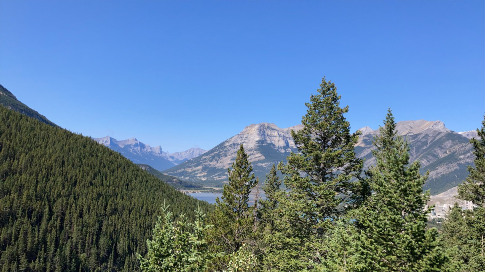

 This is a website that shows the different mountains throughout the year. Each of the photos in the header was taken by me, including the content photos in the "Home" page and the "Summer" page. The text on each of the pages was taken from the wikipedia page that coresponds to each season, so I cannot take any credit. In the paragraphs below is text taken from the "Season" wikipedia page.
A season is a division of the year based on changes in weather, ecology, and the number of daylight hours in a given region. On Earth, seasons are the result of Earth's orbit around the Sun and Earth's axial tilt relative to the ecliptic plane. In temperate and polar regions, the seasons are marked by changes in the intensity of sunlight that reaches the Earth's surface, variations of which may cause animals to undergo hibernation or to migrate, and plants to be dormant. Various cultures define the number and nature of seasons based on regional variations, and as such there are a number of both modern and historical cultures whose number of seasons varies.
The Northern Hemisphere experiences more direct sunlight during May, June, and July, as the hemisphere faces the Sun. The same is true of the Southern Hemisphere in November, December, and January. It is Earth's axial tilt that causes the Sun to be higher in the sky during the summer months, which increases the solar flux.